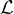

Isochrons are usually fitted by ‘York regression’, which uses a weighted least squares approach that accounts for correlated uncertainties in both variables. Despite its tremendous popularity in modern geochronology, the York algorithm has two important limitations that reduce its utility in several applications. First, it does not provide a satisfactory mechanism to deal with so-called ‘errorchrons’, i.e. datasets that are overdispersed with respect to the analytical uncertainties. Second, York regression is not readily amenable to anchoring, in which either the slope or the intercept of the isochron is fixed based on some external information. Anchored isochrons can be very useful in cases where the data are insufficiently spread out to constrain both the radiogenic and non-radiogenic isotopic composition.
This paper addresses both of these issues by extending a maximum likelihood algorithm that was first proposed by Titterington and Halliday (1979, Chemical Geology 26.3-4: 183-195). The new algorithm offers the ability to attribute any excess dispersion to either the inherited component (‘model 3a’) or to diachronous closure of the isotopic system (‘model 3b’). It provides an opportunity to anchor isochrons either to a fixed nonradiogenic composition or a fixed age. Last but not least, it allows the user to attach meaningful analytical uncertainty to the anchor. The new method has been implemented in IsoplotR for immediate use in Ar/Ar, Pb/Pb, U/Pb, Th/Pb, Rb/Sr, Sm/Nd, Lu/Hf, Re/Os, K/Ca and U-Th-He geochronology.
Isochrons are mixing lines between radiogenic and inherited isotopic endmembers. They are an essential component of radiometric geochronology and exist in several forms. Sections 1–7 of this paper will deal with the simple case of ‘P/D-isochrons’, which apply to geochronometers that are based on the decay of a single radioactive parent nuclide (P; e.g., 87Rb, 40K, 147Sm) to a particular daughter nuclide (D; e.g., 87Sr, 40Ar, 143Nd). Sections 8 and 9 will discuss Pb/Pb- and U/Pb-isochrons, respectively. These are based on the paired decay of two parents (238U and 235U) to two daughters (206Pb and 207Pb, respectively) and require linear regression in two or three dimensions.
P/D-isochrons come in two types. ‘Conventional’ isochrons are straight line relationships of the following kind:
| (1) |
where i is the aliquot number (1 ≤ i ≤ n), d is a non-radiogenic sister isotope of D, [D∕d]0 is the inherited component, λ is the decay constant and t is the time elapsed since isotopic closure. A full list of definitions is provided in Appendix A. ‘Inverse’ isochrons are obtained by permuting P, D and d:
| (2) |
The choice between conventional and inverse isochrons depends on the relative precision of the mass spectrometer measurements. Inverse isochrons are preferred if d ≪ D. Otherwise, conventional isochrons are fine (Li and Vermeesch, 2021).
Equations 1 and 2 can be recast into a generic linear form:
| (3) |
Table 1 maps the parameters of this generic equation to the parameters of Equations 1, 2 and subsequent variants thereof. Equation 3 is usually solved by York et al. (2004) regression (hereafter simply referred to as ‘York regression’). York regression uses a least squares algorithm to estimate the intercept (a) and slope (b) of the isochron line from an n × 5 table of paired isotopic ratio measurements, their standard errors and their error correlations.
Although this paper will use the York parameters a and b to fit the isochron, all results will be presented in terms of the geologically more meaningful inherited endmember ratio [D∕d]0 and radiogenic endmember ratio [D∕P]*≡ eλt - 1, where [D∕d]0 = a and [D∕P]* = b for conventional isochrons, and [D∕d]0 = 1∕a and [D∕P]* = -b∕a for inverse isochrons (Li and Vermeesch, 2021).
The most accurate and precise results are obtained from samples that are evenly spread along the isochron line, spanning the entire range of values from the inherited to the radiogenic endmember. Unfortunately, this condition is not always fulfilled. It is not uncommon for most or all aliquots in a sample to cluster together at one point along the isochron, making it difficult to accurately estimate the endmember compositions. For example, no precise isochron ages can be obtained from samples whose radiogenic daughter component is dwarfed by the inherited daughter component. Conversely, the composition of the inherited component cannot be precisely estimated in extremely radiogenic samples. Finally, when the data cluster together in the middle, then neither endmember component can be reliably determined (Figure 1).
Sometimes, such poorly constrained isochrons can be fixed using external information. For example, if the composition of the inherited component is known through some independent means (e.g., by analysing a cogenetic mineral that is naturally poor in P and rich in D and d), then this information can be used to anchor the isochron. Anchoring reduces the number of unknown parameters by one, benefitting numerical stability and precision. Conversely, if the age of the sample is known, then the inherited component can be estimated by anchoring to the radiogenic endmember.
There currently exists no formally documented way to anchor York regression. A commonly used ‘hack’ is to add an extra data point with infinite precision representing either the inherited or radiogenic endmember component. However, this hack does not provide a satisfactory mechanism to assign uncertainty to the anchor. This paper solves that problem. Section 2 introduces a maximum likelihood formulation of York regression, which is amenable to anchoring with uncertainty. Section 3 shows how this formulation can be used to model ‘errorchrons’ that are overdispersed with respect to the analytical uncertainties.
Section 4 provides further details about the implementation of maximum likelihood regression, which can attribute overdispersion to either the intercept (‘model 3a’) or slope (‘model 3b’) of the linear fit. It turns out that model 3b is computationally more challenging than model 3a. Section 5 shows how this issue can be avoided by inverting and flipping the isochron axes.
Section 6 shows how anchored isochron regression represents a trivial special case of the maximum likelihood algorithm. Section 7 attaches two different geological interpretations to the uncertainty of isochron anchors. These two interpretations lead to two different fit models (‘model 1’ and ‘model 3’, which are so named for historical reasons). Sections 8 and 9 apply the same logic to Pb/Pb and U/Pb isochrons, respectively. Finally, Section 10 shows how the new algorithms can be used within the IsoplotR software package.
York et al. (2004) use the method of least squares to fit the general problem of weighted regression with correlated uncertainties in both variables. Titterington and Halliday (1979) obtained identical results using the method of maximum likelihood. The latter approach offers greater flexibility than least squares and will be used in the remainder of this paper.
The method of maximum likelihood is a standard statistical technique to estimate the parameters of a probability distribution from a set of measurements. In the case of two-dimensional isochron regression, the parameters are the intercept a, the slope b and the true (but unknown) xi-values. The data are the Xi and Y i-measurements along with their assumed uncertainties and error correlations (see Appendix A for a full list of definitions). For a dataset of n aliquots, there are 2n measurements (n Xi-values and n Y i-values) and n + 2 parameters (a, b and n xi-values). That leaves 2n - n - 2 = n - 2 ‘degrees of freedom’ to estimate the parameters.
This overconstrained problem can be solved by minimising the paired differences (‘residuals’) between the true xi- and yi-values (where yi = a + bxi) and the measured Xi- and Y i-values:
| (4) |
To make the problem tractable, the vector of residuals Δi is assumed to be drawn from a bivariate normal distribution with zero mean and covariance matrix Σi:
| (5) |
The product of the normal probabilities for all the aliquots (from 1 ≤ i ≤ n) is
called the ‘likelihood’ of the parameters given the data. Maximising this number
produces the most accurate possible parameter estimates â,  and
and  i. Alternatively,
and equivalently, the same estimates can be obtained by maximising the logarithm of
the likelihood. This is the preferred approach as it improves numerical stability and
facilitates the estimation of the parameter uncertainties. The log-likelihood function
can be formally defined as:
i. Alternatively,
and equivalently, the same estimates can be obtained by maximising the logarithm of
the likelihood. This is the preferred approach as it improves numerical stability and
facilitates the estimation of the parameter uncertainties. The log-likelihood function
can be formally defined as:
| (6) |
This formulation allows for correlated uncertainties between the variables (s[Xi,Y i]≠0 in Equation 5), but not between aliquots (s[Xi,Y j] = 0 if i≠j). Daëron and Vermeesch (2023) discuss the generalised case of ‘omnivariant’ regression, where this requirement has been relaxed and Equation 6 is replaced with a single matrix expression.
The degree to which the residuals Δi are consistent with the assumed analytical uncertainties Σi can be assessed using a Chi-square test and MSWD parameter. Readers who are not familiar with these concepts are referred to Appendix C for details. Isochrons that exhibit significant overdispersion with respect to the analytical uncertainties are colloquially referred to as ‘errorchrons’. Whether it is right to use such a pejorative term for this common phenomenon is debatable (Schaen et al., 2021). Four approaches may be used to deal with errorchrons:
model 1: Inflate the analytical uncertainties by a factor  .
.
model 2: Ignore the analytical uncertainties and replace York regression with orthogonal regression or a similar technique. This approach will not be discussed further in this paper.
model 3: Quantify the dispersion as an additional free parameter. There are two options for doing so:
model 3a: Attribute the excess dispersion to variability of the inherited component and, hence, the isochron intercept. For conventional isochrons, this means that the true isotopic ratios of the cogenetic aliquots do not belong to a single isochron line, but to a family of parallel isochron lines whose intercepts are normally distributed (Titterington and Halliday, 1979). The standard deviation of this normal distribution (σa) can be used to quantify the dispersion of the data around the ‘central’ isochron line.
model 3b: Attribute the excess dispersion to diachronous closure of the isotopic system. This mechanism produces families of conventional isochrons that share a common intercept but differ in their slopes. Again, the distribution of the slopes can be assumed to follow a normal distribution, with mean b and standard deviation σb. The latter value can be used to quantify the dispersion of the data, which in this case captures the degree of diachroneity.
Model 3a isochron regression can be formalised by modifying Equation 4 as follows:
| (7) |
The dispersion parameter σa can be estimated (as a) by incorporating it into the covariance matrices:
| (8) |
The equivalent expressions for model 3b regression are
| (9) |
and
| (10) |
respectively.
Three specific cases of Equation 6 are of interest in the present discussion:
| (11) |
Note that the (logged) determinant of the covariance matrices is not included in the constant for model 3 fits, because Σa,i and Σb,i are both functions of x, whereas Σi is not.  can be numerically maximised using an iterative two-step procedure. For model 1 regression, the first step maximises 1(x|a,b,X,Y,Σ) to find x for any pair of a- and b-values. The second step repeats the first step for different values of a and b until the overall optimum is reached.
This procedure can easily be adapted to model 3 regression, by adding σa or σb to the unknown parameters. It works well for model 3a, where the first step has a direct solution. However, it is slow for model 3b regression, in which finding x requires an additional level of iteration. See Appendix D for further details. Fortunately, in practice model model 3b is rarely or never needed for geochronology, as explained next.
For inverse isochrons, model 3b regression does not actually provide any useful information. Unlike conventional isochrons, whose chronological information is contained in the slope, the chronological information of inverse isochrons is contained in their horizontal intercept. This information can be unlocked by flipping the axes of the isochron diagram around, inverting the isochron, and treating the D/P-ratio as the dependent variable. Applying model 3a regression to the flipped data yields a dispersion estimate σa that can be used to quantify the age dispersion.
The same trick can be used to estimate the slope uncertainty of a conventional isochron. A pragmatic way to avoid the slow convergence rate of model 3b regression is to carry out the numerical optimisation in inverse isochron space, flip the dependent and independent variables around, invert the isochron a second time and carry out a model 3a regression on the transformed data. The resulting σa-estimate can be converted to a σb-estimate:
| (12) |
Figure 2 applies model 3 regression to two synthetic Ar–Ar datasets with a non-radiogenic 40Ar/36Ar-ratio of 400 and an age of 100 Ma. The dataset of Figure 2.i exhibits overdispersion of the y-intercept ([40Ar/36Ar]0 = 400,σa = 40), whereas the dataset of Figure 2.ii is overdispersed in the x-intercept (t = 100 Ma, σt = 10 Ma). In both cases, the maximum likelihood algorithm has retrieved the correct solution from the noisy data.
Anchored isochron regression requires just a trivial modification of the maximum likelihood algorithm. It suffices to treat the anchored parameter as data. For example, the slope and intercept of a model 1 isochron can be anchored by maximising 1(a,x|b,X,Y,Σ) and 1(b,x|a,X,Y,Σ), respectively. Note that these calculations assume that the anchor is known exactly. This is reflected in the zero uncertainties of the nonradiogenic component Figures 1.ii and 1.v, and of the radiogenic components of Figures 1.iii and 1.vi. Such absolute certainty is unrealistic in the noisy world of geology. Section 7 introduces two ways to formally account for uncertainty in anchored isochron regression.
When assigning uncertainty to statistical parameters, it is important to clearly define the meaning of this uncertainty. In the case of anchored isochron regression, the uncertainty of the intercept or slope can carry two meanings. For example, when the intercept of an isochron is anchored at a value ± σ, this can either mean that:
model 1: the data are underlain by a single isochron whose intercept is only approximately known, with a most likely value of and a precision (standard error) of σ.
model 3: the data were drawn from a family of isochron lines whose intercepts follow a normal distribution with mean and standard deviation σ.
These two different approaches can be implemented by replacing the log-likelihood functions of Equation 11 with
| (13) |
The equivalent expressions for anchored slopes with uncertainty are
| (14) |
Note that model 1 treats the slope and intercept as unknowns, so their maximum
likelihood estimates generally do not equal the anchored values and . However, the
smaller σ and σ are relative to and , the closer that â and  are to and . In
contrast, anchored model 3 regression fixes the dispersion of the anchored
parameters, so that a = σ for anchored intercepts, whereas
are to and . In
contrast, anchored model 3 regression fixes the dispersion of the anchored
parameters, so that a = σ for anchored intercepts, whereas  b = σ for anchored
slopes.
b = σ for anchored
slopes.
Figure 3 applies the two approaches to the synthetic dataset of Figure 1, using anchors of [D∕d]0 = 1 ± 0.05 and [D∕P]* = 1 ± 0.05 (1σ). As expected, models 1 and 3 produce slightly different outcomes, with model 1 resulting in [D∕d]0- and [D∕P]*-estimates that are slightly different than the anchored values, whereas model 3 reproduces the anchors exactly. The model 3 fits produce more precise estimates for the unanchored quantities. This reflects the fact that some of the uncertainty in the isochron is captured by the dispersion parameter, which is absent from the model 1 fit.
Model 3 partitions the analytical and geological uncertainty between the
standard errors of â and  on the one hand, and the dispersion parameter on the
other hand. It is not easy to visualise this partitioned uncertainty. Figure 3 uses a
grey confidence envelope to show the analytical uncertainty, and black error bars to
visualise the geological dispersion. Together these two items represent the total
uncertainty budget.
on the one hand, and the dispersion parameter on the
other hand. It is not easy to visualise this partitioned uncertainty. Figure 3 uses a
grey confidence envelope to show the analytical uncertainty, and black error bars to
visualise the geological dispersion. Together these two items represent the total
uncertainty budget.
It is, of course, also possible to treat the dispersion parameter as an unknown by maximising 3a(b,σa,x|,X,Y,Σ) or 3b(a,σb,x|,X,Y,Σ). Section 9 will give an example of this in the context of U–Pb geochronology.
The 207Pb/206Pb-method is based on the paired decay of two radioactive parents P1 and P2 (238U and 235U) to two daughters D1 and D2 (206Pb and 207Pb, respectively) in the presence of a non-radiogenic sister isotope d (204Pb). This gives rise to the following implicit age equation:
| (15) |
where λ1 and λ2 are the decay constants of P1 and P2, respectively, and [P2∕P1] is constant. Equation 15 can be recast into the generic form of Equation 3 to form a ‘D/D-isochron’ using the mapping of Table 1. This gives rise to conventional (207Pb/204Pb vs. 206Pb/204Pb) and inverse (207Pb/206Pb vs. 204Pb/206Pb) isochrons.
Unlike inverse P/D-isochrons, which are characterised by negative slopes, inverse D/D-isochrons have positive slopes. There is a perfect symmetry between conventional and inverse D/D-isochrons in the sense that the intercept of a conventional isochron equals the slope of an inverse isochron and vice versa. This slightly changes and, in fact, simplifies the procedure for anchored isochron regression.
There is no need for flipped isochron regression of Pb/Pb data. Instead, all possible scenarios can be handled by straightforward model 1 and model 3a regression. Isochrons can be anchored to the nonradiogenic component in conventional isochron space, and to the radiogenic component in inverse isochron space.
The U/Pb method, like the Pb/Pb method, is based on the paired decay of 238U to 206Pb and of 235U to 207Pb. The two chronometers can be treated separately and plotted as P/D-isochrons. These two-dimensional isochrons can be anchored to the radiogenic and nonradiogenic composition using the methods described in Sections 2–7.
| (16) |
Alternatively, the two ingrowth equations can also be coupled, forming a three dimensional ‘total-Pb/U isochron’. This problem can be solved using the method of maximum likelihood (Ludwig, 1998). There is just one important difference between this solution and the York-like algorithm of Section 2. York regression is formulated in terms of a generic intercept (a) and slope (b). In contrast, the ‘Ludwig’ algorithm is formulated in terms of the actual non-radiogenic 206Pb/204Pb (= α) and 207Pb/204Pb (=β) ratio, as well as the age (t) of the system.
It is relatively straightforward to generalise the concept of model 3 regression to total-Pb/U isochrons when the dispersion is attributed to the isochron age. However, it is not immediately clear how to do the same for the nonradiogenic composition, because this would require partitioning the dispersion between the α- and β-parameters. This paper will not attempt to answer this question. Instead, let us conclude the technical discussion by shifting to a far more common type of U/Pb data.
Most published U/Pb studies do not report 204Pb because this nuclide is rare and difficult to measure. Instead, ‘semitotal-Pb/U’ regression is done in Wetherill or Tera-Wasserburg concordia space, which are akin to conventional and inverse isochron space, respectively. In the absence of a nonradiogenic sister isotope of Pb, the isochron is then redefined as as a mixing line between an inherited 207Pb/206Pb-ratio and the radiogenic 206Pb/238U- and 207Pb/235U-ratios.
The semitotal-Pb/U problem can be cast into a maximum likelihood format by replacing Equation 4 with
| (17) |
where Xi and Y i are the measured 207Pb/235U- and 206Pb/238U-ratios of the ith aliquot, respectively; xi is the true 207Pb0∕235U-ratio of the ith aliquot; a = eλ238t - 1 and b = [206Pb∕207Pb]0[235U∕238U]. Equation 17 can be solved using the same recipe as the York reformulation of Sections 2–7, with the caveat that the isochron terminates on the concordia line at the U/Pb composition corresponding to t.
Figure 4 shows a model 3a anchored semitotal-Pb/U isochron in Tera-Wasserburg
space. The true age for this synthetic dataset is 1500 Ma. The unconstrained
model 1 isochron produces an imprecise isochron age of 1491 ± 100 Ma, which is
improved to 1504 ± 38 Ma by anchoring to [207Pb∕206Pb]0 = 1.1. Just like the
P/D-isochrons of Figure 3, the uncertainty budget for the U/Pb-isochrons of
Figure 4 is partitioned between the analytical and geological dispersion, where the
latter is treated as a free parameter with a maximum likelihood estimate of
 a = 0.053 ± 0.026.
a = 0.053 ± 0.026.
All the algorithms presented in this paper have been implemented in the free and open geochronological toolbox IsoplotR (Vermeesch, 2018). The ability to fit isochrons with models 1, 2 and 3 dates back to IsoplotR’s first public release. Versions 2.1 and 5.2 added model 1 anchors to U/Pb ischrons without and with uncertainty, respectively. Anchored York regression and model 3 anchors with uncertainty were added to IsoplotR 6.0. These funtions can be accessed via the GUI or from the command line.
In the GUI, anchored regression is available from the ‘isochron’ menu (so not from the ‘concordia’ menu for U/Pb data). The relevant settings can be selected from the ‘Options’ menu and should be self explanatory. Using a built-in 40Ar/39Ar-dataset to illustrate the command-line functionality, and starting with an unanchored inverse isochron fit using York regression:
library(IsoplotR) attach(examples) isochron(ArAr)
To carry out model 3a isochron regression anchored to a variable initial 40Ar/36Ar-ratio of 300 ± 5 (1σ):
settings(’iratio’,’Ar40Ar36’,300,5) isochron(ArAr,anchor=1,model=3,taxis=TRUE)
where settings(…) is used to change the atmospheric argon composition, anchor=1 fixes the isochron to the inherited component, model=3 tells IsoplotR to assign the dispersion to the reported uncertainty of the atmospheric 40Ar/36Ar-ratio, and taxis=TRUE changes the x-axis to a time scale (as in Figure 2).
Finally, to carry out model 3b isochron regression anchored to a radiogenic composition that was set at 62 ± 1 Ma (1σ):
isochron(ArAr,anchor=c(2,62,1),model=3,taxis=TRUE)
The dispersion can be changed to a free parameter by setting the third element of the anchor argument to a non-positive value. Documentation for additional options and settings can be accessed from the console, using the help(isochron) or ?isochron commands.
This paper builds on previous work by McIntyre et al. (1966), Titterington and Halliday (1979) and Ludwig (2003). McIntyre et al. (1966) introduced the concept of model 3 isochron regression, attributing the excess dispersion of errorchrons to variability of the inherited component. This approach is implemented in Isoplot (Ludwig, 2003) and is referred to as model 3a regression in this paper. Note that McIntyre et al. (1966)’s definition of model 2 regression differs from that of Ludwig (2003). It is more akin (but not identical) to the approach of Section 3.
Titterington and Halliday (1979) recast the model 3 algorithm of McIntyre et al. (1966) in a maximum likelihood framework. This paper extends the maximum likelihood approach to a second type of geological scenario, in which excess dispersion of the data around the isochron is not attributed to the inherited component but to the radiogenic component. This approach is referred to as model 3b regression.
The maximum likelihood formulation of isochron regression can also be used to anchor isochrons to either the inherited or the radiogenic component, and to assign geologically meaningful uncertainty to the anchor. In reality it is possible that some samples are affected by both mechanisms, so that different aliquots of the same sample differ in their initial ratios as well as the timing of their isotopic closure. Unfortunately, it is not possible to simultaneously capture both types of dispersion using the algorithms of this paper.
The difference between model 1 and model 3 regression represents two contrasting views of geological reality. The model 1 approach assumes that the isotopic composition of minerals represents discrete components recorded at distinct events. In contrast, model 3 isochrons represent a ‘fuzzier’ reality, in which the initial composition or timing of isotopic closure are allowed to vary within a rock. Under the latter model, the concept of an ‘errorchron’ no longer makes sense.
IsoplotR is available from CRAN ( https://CRAN.R\-project.org/package=IsoplotR) and GitHub ( https://github.com/pvermees/IsoplotR)
P: a radioactive parent (e.g., 87Rb).
D: the radiogenic daughter of P (e.g., 87Sr).
d: a non-radiogenic sister isotope of D (e.g., 86Sr).
a, b, xi, yi: the true (but unknown) values of the intercept, slope and isotopic ratio of the ith aliquot (out of n aliquots) from a sample.
â, , i, ŷi: the estimated values of a, b, xi and yi, respectively.
Xi, Y i: the measured values of xi and yi, respectively.
s[Xi], s[Y i], s[Xi,Y i]: the standard errors and covariance of Xi and Y i.
ϵx,i = Xi -xi, ϵy,i = Y i -yi: the residuals of the data around the best fit line.
Σi: the 2 × 2 covariance matrix of Xi and Y i
x, y, X, Y, Σ: arrays and sets containing all n xi, yi, Xi, Y i and Σi-values.
All uncertainties in this paper are reported as 95% confidence intervals except if noted otherwise.
| P/D | D/D
| |||
| parameter | conventional | inverse | conventional | inverse |
| xi | [P∕d]i | [P∕D]i | [D1∕d]i | [d∕D1]i |
| yi | [D∕d]i | [d∕D]i | [D2∕d]i | [D2∕D1]i |
| a | [D∕d]0 | [d∕D]0 | [D2∕d]0 | [D2∕D1]* |
| b | [D∕P]* | -[d∕D]0∕[P∕D]* | [D2∕D1]* | [D2∕d]0 |
The synthetic data of Figures 1 and 3 were generated as follows:
Generate x by drawing ten random numbers from a logit-normal distribution where the mean and standard deviation of the logits are 0 and 1/5, respectively.
Generate y by plugging x into Equation 3 with a = b = 1.
Turn the resulting ten pairs of {xi,yi}-values into ten trios of {Pi,Di,di}-values where di is a random number between 100 and 500.
Use each of the {Pi,Di,di}-values obtained in the previous step as parameters for a Poisson experiment.
Use the Poisson values obtained in the previous step to form ten pairs of X- and Y-measurements and their (correlated) uncertainties.
Add some excess dispersion by shrinking the uncertainties by 20%.
Note that this procedure fits the definition of a model 1 isochron, even though panels (ii) and (iv) of Figure 3 use the resulting data to illustrate model 3 regression. The synthetic data of Figures 2 and 4 are generated using a slightly different algorithm that simulates model 3a and 3b overdispersion. This modified procedure uses steps 1 and 3–5 of the procedure for Figure 1 whilst replacing step 2 with a random effects model, in which a and b are drawn from random normal distributions with standard deviations corresponding to the dispersion parameter σ (10% for Figure 2.i and 5% for Figure 4) and σ (10% for Figure 2.ii).
Whether a dataset is overdispersed with respect to the analytical uncertainties can be formally assessed using the Chi-statistic and test. To this end, calculate the χ2-statistic using the sum of squares term of Equation 6.
| (18) |
If analytical uncertainty is the only source of dispersion in the dataset, then χ2 is expected to follow a Chi-square distribution with df = n - 2 (or, for anchored regression, df = n - 1) degrees of freedom. This is called the ‘null distribution’. The probability of observing a value greater than χ2 under this distribution is called the p-value. A p-value cutoff of 0.05 is generally used to distinguish isochrons (p ≥ 0.05) from errorchrons (p < 0.05). Dividing Equation 18 by the number of degrees of freedom (df) produces a ‘reduced Chi-square statistic’, which is known to geologists as an MSWD (McIntyre et al., 1966):
| (19) |
In the absence of overdispersion, and for sufficiently large samples (n > 20), the
expected null distribution of the MSWD is approximately normal with a mean of 1
and a standard deviation  (Wendt and Carl, 1991). This information can be
used as an alternative way to test the null hypothesis.
(Wendt and Carl, 1991). This information can be
used as an alternative way to test the null hypothesis.
Section 4 described how the log-likelihood functions of Equation 11 can be maximised in a two step process: (1) find the xi-values that maximise for any pair of a- and b-values, and (2) search the space of a- and b- values until the overall maximum is found. For model 1 regression, the first step has a direct solution. Introducing some shorthand notation for the inverse of the covariance matrix Σi:
| (20) |
where Ω1,2 = Ω2,1. The fitted points xi can be found by solving:
| (21) |
which yields
| (22) |
The same approach can be used for model 3a regression (with ∂3a|∕∂xi = 0). However, it does not work for model 3b isochrons because ∂23b∕∂xi∂xj≠0 when i≠j. Therefore, the xis are interdependent and cannot be solved separately. Although it is possible to jointly optimise the entire x-vector, this takes considerably longer than model 1 and model 3a regression. Fortunately, as explained in Section 5, model 3b regression can be reformulated in terms of the model 3a algorithm.
PV is sole author of this contribution
PV is an Associate Editor of this journal
The author would like to thank reviewers Donald Davis and John Rudge for suggesting to expand the discussion of model-3 regression, and for checking the equations. This work was completed during a sabbatical stay at the Institute of Geology and Geophysics, Chinese Academy of Sciences, which was supported by CAS’ President’s International Fellowship Initiative (PIFI). The author would like to thank Xian-Hua Li of IGG-CAS and Yang Li of Peking University for hosting him at IGG-CAS. He would also like to thank IsoplotR users Guilhem Hoareau (CNRS, France), Shitou Wu (IGG-CAS, China) and Stijn Glorie (Adelaide, Australia) for discussing the utility of anchored isochrons, and moving this feature up the priority list for IsoplotR.
Daëron, M. and Vermeesch, P.: Omnivariant generalized least squares regression: Theory, geochronological applications, and making the case for reconciled Δ47 calibratibons, Chemical Geology, p. 121881, 2023.
Li, Y. and Vermeesch, P.: Inverse isochron regression for Re–Os, K–Ca and other chronometers, Geochronology, 3, 415–420, 2021.
Ludwig, K. R.: On the treatment of concordant uranium-lead ages, Geochimica et Cosmochimica Acta, 62, 665–676, https://doi.org/10.1016/ S0016-7037(98)00059-3, 1998.
Ludwig, K. R.: User’s manual for Isoplot 3.00: a geochronological toolkit for Microsoft Excel, Berkeley Geochronology Center Special Publication, 4, 2003.
McIntyre, G. A., Brooks, C., Compston, W., and Turek, A.: The Statistical Assessment of Rb-Sr Isochrons, Journal of Geophysical Research, 71, 5459–5468, 1966.
Schaen, A. J., Jicha, B. R., Hodges, K. V., Vermeesch, P., Stelten, M. E., Mercer, C. M., Phillips, D., Rivera, T. A., Jourdan, F., Matchan, E. L., et al.: Interpreting and reporting 40Ar/39Ar geochronologic data, Bulletin, 133, 461–487, 2021.
Titterington, D. M. and Halliday, A. N.: On the fitting of parallel isochrons and the method of maximum likelihood, Chemical Geology, 26, 183–195, 1979.
Vermeesch, P.: IsoplotR: a free and open toolbox for geochronology, Geoscience Frontiers, 9, 1479–1493, 2018.
Wendt, I. and Carl, C.: The statistical distribution of the mean squared weighted deviation, Chemical Geology: Isotope Geoscience Section, 86, 275–285, 1991.
York, D., Evensen, N. M., Martínez, M. L., and De Basabe Delgado, J.: Unified equations for the slope, intercept, and standard errors of the best straight line, American Journal of Physics, 72, 367–375, 2004.
![[D ] [ D ] [P ] ( )
-- = -- + -- eλt - 1
d i d 0 d i](index0x.png)
![[ 2 ]
Σa,i ≡ s[Xi ] s[Xi2,Yi]2 .
s[Xi,Yi] s[Yi]+ σa](index11x.png)


{kind=link}
{kind=link}
{kind=link}
{kind=link}